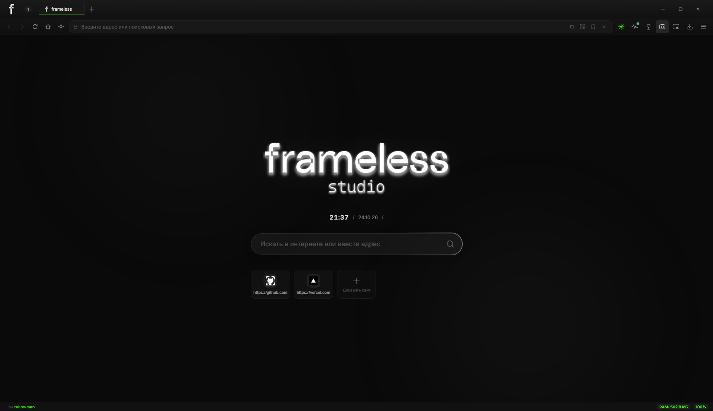
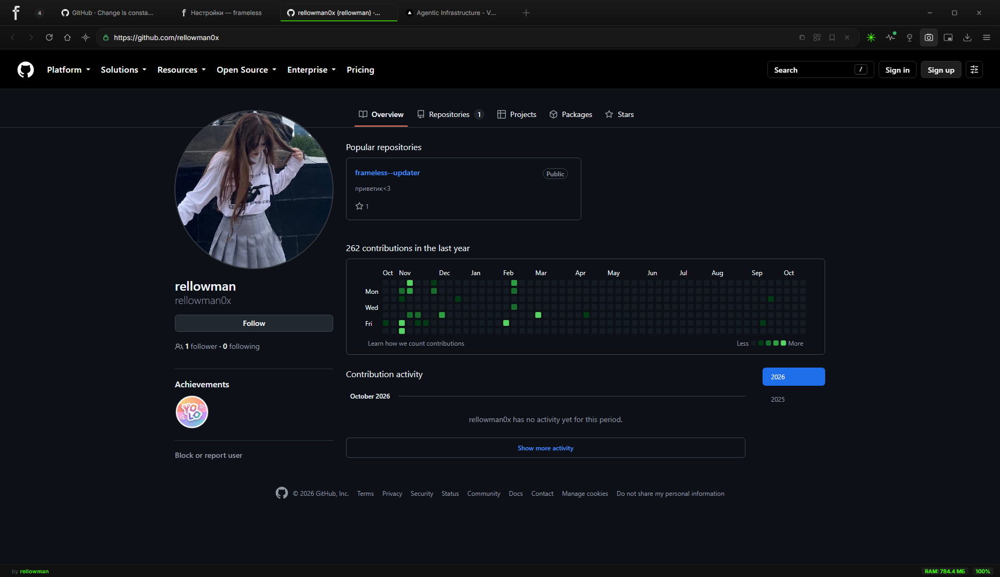
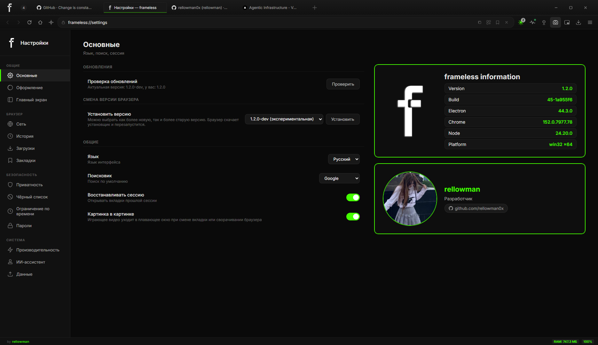

Минимализм.
Тёмный интерфейс без визуального шума: тонкие рамки, спокойные цвета, ничего не мелькает и не отвлекает от страниц.
<browser/> for windows — chromium inside, noise outside deleted
Тёмный, быстрый, дерзкий. Вкладки, пароли под Windows Hello, встроенный ИИ и автообновление — и ни грамма визуального шума.
Тёмный интерфейс без визуального шума: тонкие рамки, спокойные цвета, ничего не мелькает и не отвлекает от страниц.
Проверяет релизы на GitHub при запуске и раз в 6 часов. Новая версия скачивается и ставится сама — в один клик.
Пароли под Windows Hello, инкогнито без следов, блокировка рекламных кликандеров, ноль телеметрии.
Движок Chromium и лёгкая оболочка на Electron 44. Запуск мгновенный, вкладки не тормозят.
Ассистент «МАУЗЕР»: GPT-4o, распознавание речи Whisper и голос Edge TTS — со своим ключом OpenAI.
Закладки и настройки из Chrome и Яндекс.Браузера импортируются при первом запуске.



Официальный frameless-Setup-<версия>.exe из GitHub Releases.
Мастер установки, ярлыки на рабочем столе и в «Пуске». Данные из старого браузера подтянутся сами.
Браузер сам проверяет релизы каждые 6 часов и обновляется поверх старой версии.
checking latest release…
# what's new —
GET https://api.github.com/repos/rellowman0x/frameless--updater/releases?per_page=1 загрузка…
Да. Frameless Studio полностью бесплатен.
Исходный код закрыт и не публикуется. Репозиторий используется для релизов, документации и багов.
Автоматически: при запуске и раз в 6 часов браузер проверяет GitHub Releases. Новая версия скачивается и ставится сама.
Нет. Только Windows 10/11 (x64), NSIS-установщик frameless-Setup-x.y.z.exe.
Портативной версии тоже нет.
Windows 10 или 11 (x64). Для ИИ-ассистента — свой ключ OpenAI.
Установщик без цифровой подписи — Defender/Kaspersky могут ругаться, это ложное срабатывание. Качайте только из официальных релизов репозитория.